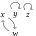
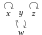
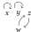
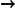
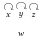

DOI: https://doi.org/10.1145/3184558.3186231
WWW '18: Proceedings of The Web Conference 2018, Lyon, France, April 2018
Graph aggregation is the process of computing a single output graph that constitutes a good compromise between several input graphs, each provided by a different source. One needs to perform graph aggregation in a wide variety of situations, e.g., when applying a voting rule (graphs as preference orders), when consolidating conflicting views regarding the relationships between arguments in a debate (graphs as abstract argumentation frameworks), or when computing a consensus between several alternative clusterings of a given dataset (graphs as equivalence relations). Other potential applications include belief merging, data integration, and social network analysis. In this short paper, we review a recently introduced formal framework for graph aggregation that is grounded in social choice theory. Our focus is on understanding which properties shared by the individual input graphs will transfer to the output graph returned by a given aggregation rule. Our main result is a powerful impossibility theorem that generalises Arrow's seminal result regarding the aggregation of preference orders to a large collection of different types of graphs. We also provide a discussion of existing and potential applications of graph aggregation.
ACM Reference Format:
Ulle Endriss and Umberto Grandi. 2018. Graph Aggregation. In WWW '18 Companion: The 2018 Web Conference Companion, April 23–27, 2018, Lyon, France. ACM, New York, NY, USA 4 Pages. https://doi.org/10.1145/3184558.3186231
Suppose each of the members of a group of autonomous agents provides us with a different directed graph that is defined on a common set of vertices. Graph aggregation is the task of computing a single graph over the same set of vertices that, in some sense, represents a good compromise between the various individual views expressed by the agents. Graphs are ubiquitous in computer science and artificial intelligence (AI). For example, in the context of decision support systems, an edge from vertex x to vertex y might indicate that alternative x is preferred to alternative y. In the context of modelling interactions taking place on an online debating platform, an edge from x to y might indicate that argument x undercuts or otherwise attacks argument y. And in the context of social network analysis, an edge from x to y might express that person x is influenced by person y. How to best perform graph aggregation is a relevant question in these three domains, as well as in any other domain where particular graphs may be supplied by different agents or originate from different sources. For example, in an election, we have to aggregate the preferences of several voters. In a debate, we sometimes have to aggregate the views of the individual participants in the debate. And when trying to understand the dynamics within a community, we sometimes have to aggregate information coming from several different social networks.
In recent work [13], we introduced a formal framework for studying graph aggregation in general abstract terms and demonstrated its relevance to a wide range of applications. The present paper provides a compact exposition of this contribution. Our framework provides tools for evaluating what constitutes a “good” method of aggregation and it allows us to ask questions regarding the existence of methods that meet a certain set of requirements. Our approach is inspired by work in social choice theory [2], which offers a rich framework for the study of aggregation rules for preferences—a very specific class of graphs. Our technical results focus on the conditions under which an aggregation rule will preserve certain attractive properties of graphs during aggregation.
Related work. Our work builds on and is related to contributions in the field of social choice theory, starting with the seminal contribution of Arrow [1]. This concerns, in particular, contributions to the theory of voting and preference aggregation [2, 24, 26], but also judgment aggregation [9, 16, 21]. In computer science, these frameworks are studied in the field of computational social choice [5]. As we shall discuss in some detail, graph aggregation is an abstraction of several more specific forms of aggregation taking place in a wide range of different domains. Aggregation of specific types of graphs has been studied, for instance, in nonmonotonic reasoning [10], belief merging [23], social network analysis [29], clustering [14], and argumentation in multiagent systems [7].
Paper overview. Section 2 introduces our framework of graph aggregation. Section 3 presents our main technical results, showing that certain desirable properties of aggregation rules are impossible to realise simultaneously. Section 4, finally, discusses applications.
In this section, we present the basic definitions of our model, and some examples for aggregation rules and axiomatic properties.
Fix a finite set of vertices V. A (directed) graph G = ⟨V, E⟩ based on V is defined by a set of edges E⊆V × V. We write xEy for (x, y) ∈ E. As V is fixed, G is in fact fully determined by E. We therefore identify sets of edges E⊆V × V with the graphs G = ⟨V, E⟩ they define. For any kind of set S, we use 2 S to denote the powerset of S. So 2 V × V is the set of all graphs. We use E(x) ≔ {y ∈ V∣(x, y) ∈ E} to denote the set of successors of a vertex x in a set of edges E.
A given graph may or may not satisfy a specific property, such as transitivity, reflexivity, or more complex properties coming from specific application domains, such as negative transitivity used in economics or the Euclidean property familiar from modal logic. We are going to be interested in families of graphs that all satisfy several of these properties. It will often be useful to think of a graph property P, such as transitivity, as a subset of 2 V × V .
Let $\mathcal {N}=\lbrace 1,\ldots ,n\rbrace$ be a finite set of (two or more) individuals (or agents). We are going to refer to subsets of $\mathcal {N}$ as coalitions. Suppose every individual $i\in \mathcal {N}$ specifies a graph Ei ⊆V × V. This gives rise to a profile E = (E 1, …, En ). We use $N^{E}_e:=\lbrace i\in \mathcal {N}\mid e\in E_i\rbrace$ to denote the coalition of individuals accepting edge e under profile E. An aggregation rule is a function F: (2 V × V ) n → 2 V × V , mapping any profile of individual graphs into a single graph. An example for an aggregation rule is the majority rule, accepting a given edge if and only if more than half of the individuals accept it.
Under a quota rule, an edge will be included in the graph returned by the rule, if the number of individuals accepting it meets a certain quota. Formally, a quota rule is a rule Fq defined via a function q: V × V → {0, 1, …, n + 1}, associating each edge with a quota:
Fq is called a uniform quota rule in case q is a constant function. The uniform quota rules include three simple and well-known rules: the (strict) majority rule F maj is the uniform quota rule with $q=\lceil \frac{n+1}{2}\rceil$ , the intersection rule F ∩ is the uniform quota rule with q = n, and the union rule F ∪ is the uniform quota rule with q = 1. The idea of using quota rules is natural and widespread. For example, quota rules have been studied in judgment aggregation [8].
Next, we present a new class of aggregation rules specifically designed for graphs that is inspired by approval voting [4]. Imagine we associate each vertex with an election in which all the possible successors of that vertex are the candidates (and in which there may be more than one winner). Each agent votes by stating which vertices she considers acceptable successors. Based on this information, a choice function v: (2 V ) n → 2 V selects which edges to include in the outcome graph. Formally, the successor-approval rule based on v is the aggregation rule Fv defined by stipulating:
For example, such a rule might accept exactly those successors of a given vertex x that receive above-average support.
When choosing an aggregation rule, we need to consider its properties. In social choice theory, such properties are called axioms [26]. We now introduce three basic axioms for graph aggregation.
First, we introduce an independence condition that requires that the decision of whether or not a given edge e is to be accepted by a rule should only depend on which of the individual graphs include e. This corresponds to well-known axioms in preference and judgment aggregation [1, 22]. Formally, an aggregation rule F is called independent of irrelevant edges (IIE) if $N^{{E}}_e = N^{{E^{\prime }}}_e$ implies e ∈ F(E)⇔e ∈ F(E′). That is, if exactly the same individuals accept e under profiles E and E′, then F should either accept e in both cases or it should reject e in both cases.
Next, the fundamental economic principle of unanimity requires that an edge should be accepted by a group in case all individuals in that group accept it. Formally, an aggregation rule F is called unanimous if it is always the case that F(E)⊇E 1∩⋅⋅⋅∩En .
Finally, a requirement that, in some sense, is dual to unanimity is to ask that the outcome graph should only include edges that are part of at least one of the individual graphs. In the context of ontology aggregation this axiom has been introduced under the name groundedness [25]. Formally, an aggregation F is called grounded if it is always the case that F(E)⊆E 1∪⋅⋅⋅∪En .
Whether or not to insist on a given axiom depends on the application at hand. Unanimity and groundedness are uncontroversial and certainly desirable in most contexts. Independence is much harder to satisfy, but very useful when it can be guaranteed, as it greatly simplifies the process of aggregation. For example, all quota rules are independent, but (for most natural choices of v) successor-approval rules are not.
To what extent can a given aggregation rule ensure that a given property that is satisfied by each of the individual input graphs will be preserved during aggregation? This question relates to a well-studied concept in social choice theory, often referred to as collective rationality [1, 21]. In the literature, collective rationality is usually defined w.r.t. a specific property that should be preserved (e.g., the transitivity of preferences or the logical consistency of judgments). Here, instead, we formulate a definition that is parametric w.r.t. a given graph property.
Formally, an aggregation rule F is called collectively rational w.r.t. a graph property P if F(E) satisfies P whenever all of the individual graphs in a given profile E = (E 1, …, En ) do.
Suppose three individuals provide us with three graphs over the same set V = {x, y, z, w}:





If we apply the majority rule, then we obtain the graph to the right of the arrow. Thus, the majority rule is not collectively rational w.r.t. seriality (the property of every vertex having a successor), as each individual graph is serial, but the graph returned by the rule is not. The property of symmetry, on the other hand, is preserved in this case.
In social choice theory, an impossibility theorem states that it is not possible to devise an aggregation rule that satisfies certain axioms and that is also collectively rational w.r.t. a certain combination of properties of the structures being aggregated (which in our case are graphs). In this section, we present two powerful impossibility theorems for graph aggregation, the Oligarchy Theorem and the Dictatorship Theorem, derived in the original paper [13].
The Dictatorship Theorem is inspired by—and significantly generalises—the seminal impossibility result for preference aggregation due to Arrow, first published in 1951 [1]. Our proof technique makes use of winning coalitions, i.e., sets of individuals who can force the acceptance or rejection of a given edge, and it hinges on the definition of three meta-properties for classifying graph properties: contagiousness, implicativeness, and disjunctiveness. Intuitively speaking, a graph property P is contagious if, under certain conditions, acceptance of one edge forces us to also accept one of the edges adjacent to that first edge; P is implicative if, again under certain conditions, the acceptance of two specific edges e 1 and e 2 forces us to also accept a third edge e 3; finally, P is disjunctive if there are two specific edges e 1 and e 2 such that, under certain conditions, we always need to accept at least one of them. We refer to the original paper for the precise definition of these meta-properties [13].
An aggregation rule F is called oligarchic (on nonreflexive edges) if there exists a coalition $C^\star \subseteq \mathcal {N}$ (the “oligarchs”) such that any given nonreflexive edge e is accepted by F if and only if all of the members of C ⋆ accept e. Thus, oligarchic rules are highly restrictive and unattractive for most applications.
Let P be a graph property that is contagious and implicative. Then, for |V| ≥ 3, any unanimous, grounded, and IIE aggregation rule F that is collectively rational w.r.t. P must be oligarchic on nonreflexive edges.
An aggregation rule F is called dictatorial (on nonreflexive edges) if there exists an individual $i^\star \in \mathcal {N}$ (the “dictator”) such that any given edge e is accepted by F if and only if i ⋆ accepts e.
Let P be a graph property that is contagious, implicative, and disjunctive. Then, for |V| ≥ 3, any unanimous, grounded, and IIE aggregation rule F that is collectively rational w.r.t. P must be dictatorial on nonreflexive edges.
Arrow's Theorem, which states the impossibility of aggregating preference orders (i.e., graphs that are reflexive, transitive, and complete), is a corollary of Theorem 3.2, since transitivity is a graph property that is contagious and implicative, while completeness is a graph property that is disjunctive. In general, any combination of graph properties that together hit all three meta-properties, by Theorem 3.2, gives rise to an impossibility theorem saying that all relevant aggregation rules are dictatorial. Similarly, any combination of graph properties that together hit the first two meta-properties, by Theorem 3.1, gives rise to an impossibility theorem saying that the only relevant aggregation rules are oligarchic.
Directed graphs are ubiquitous in computer science and beyond. They have been used as modelling devices for a wide range of applications. In this section, we sketch a number of different application scenarios for graph aggregation, each requiring different types of graphs (satisfying different properties) to model relevant objects of interest, and each requiring different types of aggregation rules.
We are also going to hint at how our impossibility theorems can be put to good use, to help clarify what is and what is not achievable in different application domains. Some of the results we have been able to obtain in this manner are new, while others demonstrate how our approach can be used to clarify known results and to obtain significantly simpler proofs for them [13].
Bounded rationality in preference aggregation.. The most immediate example for a graph aggregation problem is preference aggregation as classically studied in social choice theory [1]. In this context, vertices are interpreted as alternatives available in an election and the graphs considered—interpreted as preference orders—are reflexive, transitive, and complete. Aggregation rules then reduce to so-called social welfare functions. While the types of preferences typically considered in classical social choice theory are required to be complete, recent work in AI has also addressed the aggregation of partial preference orders, to account for the bounded rationality of agents. That is, agents may be unable to rank all alternatives. A prominent example in this literature is the work of Pini et al. [24]. Their main result is a variant of Arrow's Theorem for partial preference orders with maxima or minima, a result that can be obtained with a simple proof as a corollary of our Theorem 3.2.
Knowledge.. If we think of V as a set of possible worlds, then a graph on V that is reflexive and transitive (and possibly also symmetric) can be used to model an agent's knowledge: (x, y) being an edge means that, if x is the actual world, then our agent will consider y a possible world [19]. If we aggregate the graphs of several agents by taking their intersection, then the resulting collective graph represents the distributed knowledge of the group, i.e., the knowledge the members of the group can infer by pooling all their individual resources. If, on the other hand, we aggregate by taking the union of the individual graphs, then we obtain what is sometimes called the shared or mutual knowledge of the individual agents, i.e., the part of the knowledge available to each and every individual on their own. Finally, if we aggregate by computing the transitive closure of the union of the individual graphs, then we obtain a model of the group's common knowledge. These concepts play a role in disciplines as diverse as epistemology [20], game theory [3], and distributed systems [18].
Nonmonotonic reasoning and belief merging.. When an intelligent agent attempts to update her beliefs or to decide what action to take, she may resort to several patterns of common-sense inference that will sometimes be in conflict with each other. To take a famous example, we may wish to infer that Nixon is a pacifist, because he is a Quaker and Quakers by default are pacifists, and we may at the same time wish to infer that Nixon is not a pacifist, because he is a Republican and Republicans by default are not pacifists. In a popular approach to nonmonotonic reasoning in AI, such default inference rules are modelled as graphs that encode the relative plausibility of different conclusions [27]. Thus, here the possible conclusions are the vertices and we obtain a graph by linking one vertex with another, if the former is considered at least as plausible as the latter. Conflict resolution between different rules of inference then requires us to aggregate such plausibility orders, to be able to determine what the ultimately most plausible state of the world might be. In this context, we were able to show that a well-known impossibility result from this literature, due to Doyle and Wellman [10], is a straightforward corollary of our Theorem 3.2. Our results also allow us to clarify the underlying reasons for a possibility result established by Maynard-Zhang and Lehmann [23].
Argumentation. In a so-called abstract argumentation framework, arguments are taken to be vertices in a graph and attacks between arguments are modelled as directed edges between them [11]. A graph property of interest in this context is acyclicity, as that makes it easier to decide which arguments to ultimately accept. If we think of V as the collection of arguments proposed in a debate, a profile E = (E 1, …, En ) specifies an attack relation for each of a number of agents that we may wish to aggregate into a collective attack relation before attempting to determine which of the arguments might be acceptable to the group. Recent work has addressed the challenge of aggregating several abstract argumentation frameworks from a number of angles [7, 12]. Our approach has already proved useful in obtaining novel results in this setting [6].
Social networks.. We may also think of each of the graphs in a profile as a different social network relating members of the same population. One of these networks might describe work relations, another might model family relations, and a third might have been induced from similarities in online purchasing behaviour. Social networks are often modelled using undirected graphs, which we can simulate in our framework by requiring all graphs to be symmetric. Aggregating individual graphs then amounts to finding a single meta-network that describes relationships at a global level. Alternatively, we may wish to aggregate several graphs representing snapshots of the same social network at different points in time. The meta-network obtained can be helpful when studying the social structures within the population under scrutiny [29].
Consensus clustering.. Clustering is the attempt of partitioning a given set of data points into several clusters. The intention is that the data points in the same cluster should be more similar to each other than each of them is to data points belonging to one of the other clusters. While this is useful in many disciplines, the field is lacking a precise definition of what constitutes a “correct” partitioning of the data and there are many different clustering algorithms, such as k-means or single-linkage clustering, and even more parameterisations of those basic algorithms [28]. Observe that every partitioning that might get returned by a clustering algorithm induces an equivalence relation (i.e., a graph that is reflexive, symmetric, and transitive): two data points are equivalent if and only if they belong to the same cluster. Finding a compromise between the solutions suggested by several clustering algorithms is what is known as consensus clustering [15]. This thus amounts to aggregating several graphs that are equivalence relations. One of the classical results in this area, due to Fishburn and Rubinstein [14], is an immediate corollary to our Theorem 3.1 .
Data integration.. A promising direction for future research in graph aggregation, in the area of the Semantic Web, concerns XML data integration [17]. The basic structure underlying documents encoded in XML is that of a tree, i.e., a special kind of graph. Thus, if we want to combine information encoded using XML that has been obtained from different sources on the Semantic Web, we need to use some form of graph aggregation as well.
This paper is published under the Creative Commons Attribution 4.0 International (CC-BY 4.0) license. Authors reserve their rights to disseminate the work on their personal and corporate Web sites with the appropriate attribution.
WWW '18, April 23-27, 2018, Lyon, France
© 2018; IW3C2 (International World Wide Web Conference Committee), published under Creative Commons CC-BY 4.0 License. ACM ISBN 978-1-4503-5640-4/18/04… .
DOI: https://doi.org/10.1145/3184558.3186231